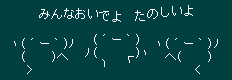

森です。ヽ(´ー｀)ノ
森には木を植えましょう。ヽ(´ー｀)ノ
→ 掲示板
ヽ γﾉ ｼ´人`ﾐ＜森蔵じゃ U U _ﾐwwwwﾐ_
じいヽ(´ー｀)ノ今のところ追加機能はこのようになっておりまする。
当掲示板は、書き込みの責任者を明確にする目的で、接続記録を保存しています。
接続記録を他の目的に使用することはありません。
法律に反する内容や個人情報にかかわる内容の投稿はご遠慮ください。
管理人のメールアドレスは mail at ntak dot net です。
管理人とは？みたいな話が出たのでネタを振りますと、昔はゲーム系の業界におりまして、プログラムコードの読み書きがちょっとだけできます。1972年産の変なおじさん。
ﾜﾗﾀスター機能追加。
退魔機能封印。
退魔機能追加。
/cgi-bin/ 配下に移動。前のURLには転送cgiを入れました。
あやしいわーるど＠森に戻す。
あやしいわーるど＠森(暫定メイソ掲示板TM)とした。メイソが復旧し次第解除します。
あやしいわーるど＠森に戻す。
もやしわーるどに改名。
index.cgi に移転。
互換表示を作った。
アップローダー設置。
一周年を迎えました。㌧ｸｽヽ(´ー｀)ノ
あやしいわーるど＠森 に戻した。
スクリプトを全部ゼロから書き直した。
掲示板名を あやしいわーるど＠うさだの森 に変更。
文字コードを Shift_JIS から UTF-8 に変更。
traditional を追加。
outgoing と inbound を追加。
過去ログ検索機能を追加。
開設。
以上です。ヽ(´ー｀)ノ
おまえどこから来たよ？ そこに何があったよ？ どうしてここに来たよ？ お前いつまでここにいるよ？ ここに居てどうするよ？ お前にとってぁゃιぃとはなによ？ お前いつまで休んでいるよ？ お前いつになれば歩き出すよ？ お前いつまで夢見ているよ？ お前の世界は美しいかよ？ お前の心に光はあるかよ？ お前の心に不安はあるかよ？ お前の心に歩き出す勇気はあるかよ？ お前ここに居て何を見出したよ？ お前それをこれからの糧にできるかよ？ お前今まで走って来たかよ？ お前急ぎすぎていなかったかよ？ お前疲れたかよ？ だから休んでいるかよ？ お前そろそろ歩き出さないかよ？ お前ゆっくり歩き出さないかよ？ お前それともまた走るのかよ？ お前自分で選べよ。 お前それでも生きていかざるを得ないよ。 そしてお前はどこへ行くよ？ お前自分で決めていけよ